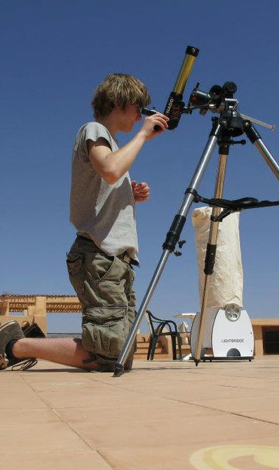

Picture: Me observing solar flares in the Morroccan Sahara desert back in 2012 when I was still in high school.
Hi and welcome to my personal webpage!
My name is Lennart van Sluijs and I am currently a DPhil student at the University of Oxford.
My main fields of interest are exoplanets and planet formation.
I am currently working on the characterization of exoplanet atmospheres using high resolution spectroscopy
together with my advisor Prof. Jayne Birkby.
In 2010 I started working as a volunteer at the public observatory Stichting Volkssterrenwacht Philippus Lansbergen.
This triggered my interest in the field of astronomy.
After high school, I began studying astronomy at Leiden University.
Here I obtained my Master's degree in Astronomy in 2018.
After graduation, I started my PhD track at the Univeristy of Amsterdam.
About a year later, I transferred to my current position at the University of Oxford.
If you have any questions, please feel free to
contact me!